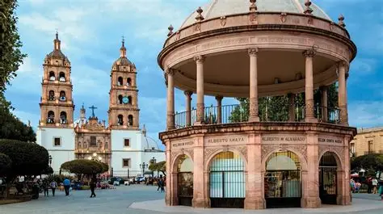
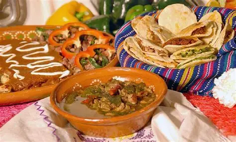
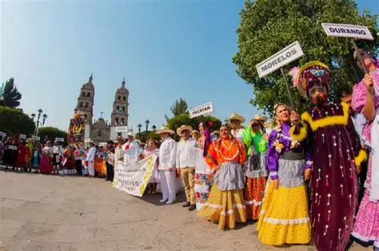

Galería

Durango es un estado del norte de México conocido por su historia, paisajes y deliciosa comida tradicional.


La comida de Durango combina sabores del norte y centro de México, usando carne, chiles y productos tradicionales.

Es muy rica y se carateristica por la mezcla de tradiciones indigena, influencia española y costumbres.

MEXIQUILLO es un parque natural impresionante en la sierra de Durango Perfecto si te gusta las aventuras por que tienen unas cascadas enormes y formaciones de rocas